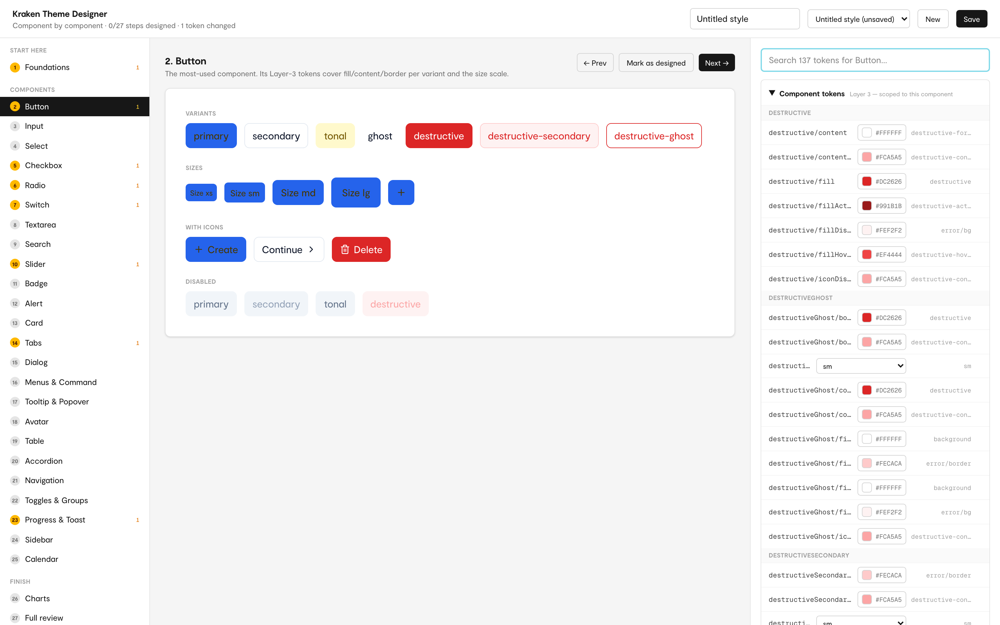
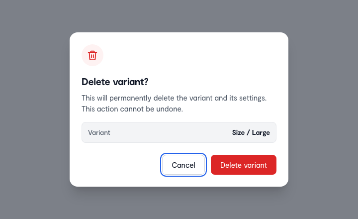
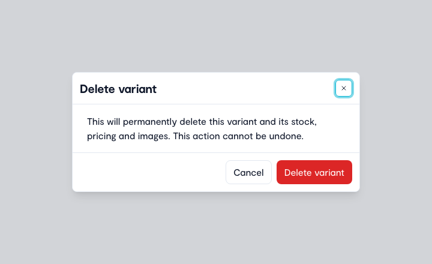
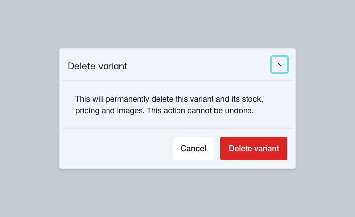

One system that a new brand, a new tool and an AI agent can all build from without guessing.
hero-jit-vs-acme.pngJIT's internal tools each had their own technology, look and behavior, client projects restyled shadcn templates, and AI agents typed in colors that matched nothing around them. I built Kraken in Figma and code as one shared system for existing tools, new tools, client brands and agents. Every new project now starts from the same parts instead of from zero.
problem-tools.pngproblem-client-template.pngproblem-agent-colors.pngsolution-overview.pngproblem-quote.pngRestyling a template per client meant touching every component. Kraken binds components to semantic and component tokens only, so a brand adds its palette and fonts and remaps the semantic layer. Acme changes 102 of 255 semantic values and none of the 277 component tokens.
layers-button-fill.pngMy first idea was a browser theme editor, but it gave less control than Figma variables, could not compare brands side by side and added a second place to edit tokens. I dropped it for a skill that turns a written brief into a semantic mode in Figma, and a second skill that syncs the mode into the token files. Acme, a fictional client brand, went from brief to rendered components that way, at the cost that setting up a brand now depends on Figma and someone who can work in it.
acme-1-brief.pngacme-2-figma.pngacme-3-tokens.pngacme-4-render.png
Once acme's fields turned white on grey containers, the switch, the slider and the resize handle still used a page color where they needed a control color. I added one semantic token for controls and rebound the three. The fix reached every brand, not only acme.
acme-leak-fix.pngA color that passes in one brand can fail in another. Every component runs through Storybook's accessibility check, and an audit skill reruns it across every brand and color scheme against WCAG 2.2 AA after any brand or token change. Automated checks catch only part of the problems, so the report also lists what it could not verify.
a11y-matrix.pngDevelopers already knew shadcn and agents already recognized its names, but Figma and shadcn disagreed in places. I built Kraken on shadcn, 45 of 56 components follow its names, and where they disagreed Figma won, so buttons have seven variants and no "outline" because "secondary" already is one. Design and code now share one vocabulary, an agent that reaches for "outline" is told to use "secondary", and the cost is some of the familiarity I chose shadcn for.
names-figma-storybook.pngshadcn-split.pngvariant="outline" and the fact sheet answers: use secondary.outline-to-secondary.pngAn agent building from a Figma screen has to guess which code component it is looking at, and Figma's Code Connect was not in JIT's plan. I made the link myself: a map from every Figma component to its code, plus a fact sheet per component with variants, defaults, tokens, accessibility notes and usage rules, read through a small local server. Nothing joins the system without a fact sheet, at the cost of upkeep, because a check fails whenever a fact sheet, the map or a token file drifts from its source.
agent-layer.pngGiven "build me a delete confirmation dialog", an agent without Kraken invented 14 colors and 37 pixel values and the result could not change brand. With the fact sheets it chose the alert dialog, used the button variants correctly and followed both brands. It was one run, and only the agent without Kraken was told the font, so I would repeat it before calling it a result.



ai-readiness: 14 colors and 37 pixel values typed in vs 0, one fixed look vs 2 brands.ai-readiness.pngRedrafting an existing screen by hand is slow, and an agent's first draft still misses judgment calls. An agent brings the screen into Figma and redrafts it from Kraken components, then I decide which component really fits, how elements are grouped, the copy and which states the design should prevent. The redrafted time-reporting screen adds the bulk option employees asked for, built from Kraken's table select.
redraft.mp4No other developer has built with Kraken yet, so I could not tell whether the fact sheets are enough. I had an agent play a developer new to the kit and build a time-off request form with a table from the fact sheets, stories and component source alone. It typed in no colors or pixel values, the screen followed both brands, and it found three gaps that I fixed.
time-off-dry-run: the time-off form in jit and acme plus the three gaps found.time-off-dry-run.pngThe redrafted screens are not in JIT's tools yet, and so far I am the only person who has built with Kraken. Acme is a fictional brand, so it proves the design, not adoption, and Timeports and WeJit are the first two tools I redrafted from the same components. A client brand now costs one layer of decisions instead of a restyled template, and the next test is the share of new screens made from Kraken parts and the hand-typed values per screen.
outcome-before-after.png